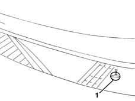
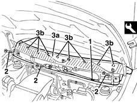

7210E22 R.R. WINDSCREEN BASE TRIM
- Path
- Procedures > 72 PANELS AND FRAME > 7210 REMOVING REFITTING > 7210E external parts > 7210E22 R.R. WINDSCREEN BASE TRIM
- Kind
- repair procedure (removal / refitting; the operation number is the code)
- Applies to
- all engines; all production periods
- Interactive page
- https://sloeber94.github.io/elrnDB-lYpsln/en/#/2429735
Applies to: all engines; all production periods
 Removing
Removing
 Refitting
Refitting5050B34 windscreen wiper arm/s complete with blade - r+r (right and left)
1. Turn the retainers through 90 to disengage.

Applies to: all engines; all production periods
Open the bonnet lid.
1. Disconnect the washer fluid pipe.
2. Undo the bolts.
3. Remove trim (3a) by releasing frm the internal retainers (3b) with the appropriate tool.
 | Name | Country |
|---|---|---|
1 | Scraper blade | 1.878.077.000 |

Applies to: all engines; all production periods
Refitting
RemovingCheck that the panel is undamaged and that the retainers are undamaged and correctly positioned.
Fit the trim and do up the retainers.
Tighten the bolts.
Connect the pipe.
Close the bonnet lid.
Do up the retainers by turning through 90
5050B34 windscreen wiper arm/s complete with blade - r+r (right and left)
Topics linked from this page (1)
Topics that link to this page (6)
- 5040A57 evaporator inlet pipe - r r
- 5050B10 front windscreen washer jets - r+r clean and/or position
- 5050B14 PIPES and connectors for front windscreen washer. - R.R.
- 5050B38 windscreen wiper assembly - r+r or repair
- 5050B42 windscreen wiper motor - r+r
- 7035A18 windscreen glass r r including cleaning of housing